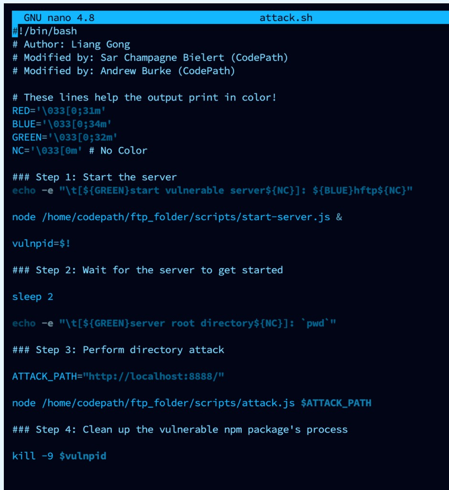
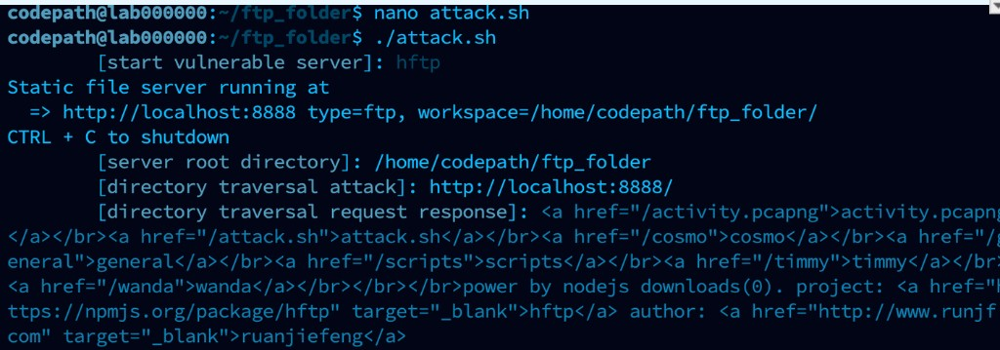
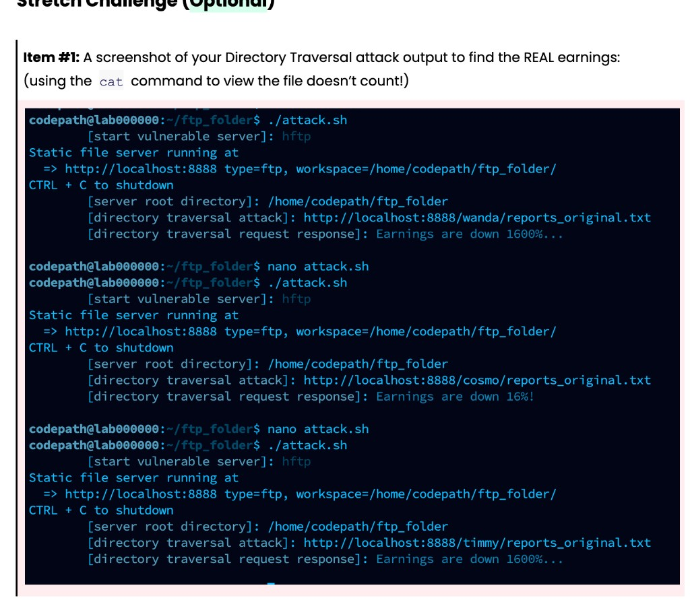

01
Overview
This lab used a fictional organization, Wishful Thinking Inc., and an intentionally vulnerable FTP service that failed to keep file access inside its intended directory. The underlying issue was directory traversal: insufficient path validation that can allow requests to reach files outside an authorized location.
The exercise combined offensive security concepts with defensive analysis. The point was not simply to trigger the flaw, but to understand how it works, what evidence of misuse can look like on the wire, how intrusion detection might flag it, and what remediation reduces the risk.
02
Technical Areas
- Directory traversal
- Studied a file-access vulnerability caused by weak validation of requested paths, and why applications must enforce filesystem boundaries.
- Intrusion detection
- Worked with Snort intrusion-detection concepts to identify traversal attempts, including detection logic and alerts generated from recorded traffic. Detailed alert artifacts from this archive are not published here.
- Packet analysis
- Used packet-capture concepts (including PCAPNG) to investigate which files were accessed during the simulated incident, with emphasis on distinguishing attempted access from completed transfers.
- Incident scoping
- Examined how recorded traffic can help establish incident scope. The assignment’s expected dataset described six served requests, including four traversal-related requests—those figures are course expectations, not independently verified results republished from a private investigation notebook.
- Remediation
- Focused on server-side path validation, restricting file access to authorized directories, and defense-in-depth measures that limit damage if a service is compromised.
- Detection limits
- An optional challenge explored how request-encoding variations can evade signature-based detection, underscoring normalization and careful detection engineering.
03
Tools & Concepts
Snort · network packet analysis · PCAPNG · directory traversal · intrusion detection · detection engineering · incident investigation · file access controls · input validation · defense in depth
04
Why It Matters
Directory traversal is a boundary failure: the service answers a path request without proving that path stays inside the allowed tree. On a file-serving host, that can expose account data, reports, or other objects the FTP root was never meant to publish. Offensive steps in the lab make the failure concrete; defensive work—Snort-style detection, PCAP review, and hardening—shows how the same incident is scoped and contained after the fact.
05
Lab Artifacts
The following items are from the course submission record for the vulnerable FTP exercise. They document the local lab harness and reported access paths. They are not a full incident-response case file, and they do not include file contents, credentials, or capture extracts.
Reflection
If explaining “what is a directory traversal attack” in three emojis: 🖥️🤖🐚
A .sh file is used because it is a shell script that can run the lab’s command
sequence through the shell.
Harness screenshots


Reported access paths
Paths recorded in the submission (path names only):
/timmy/passwords.txt
/wanda/passwords.txt
/cosmo/reports_original.txt
Stretch challenge
Optional stretch work compared account report objects through the lab harness rather than a
local cat of the files.
